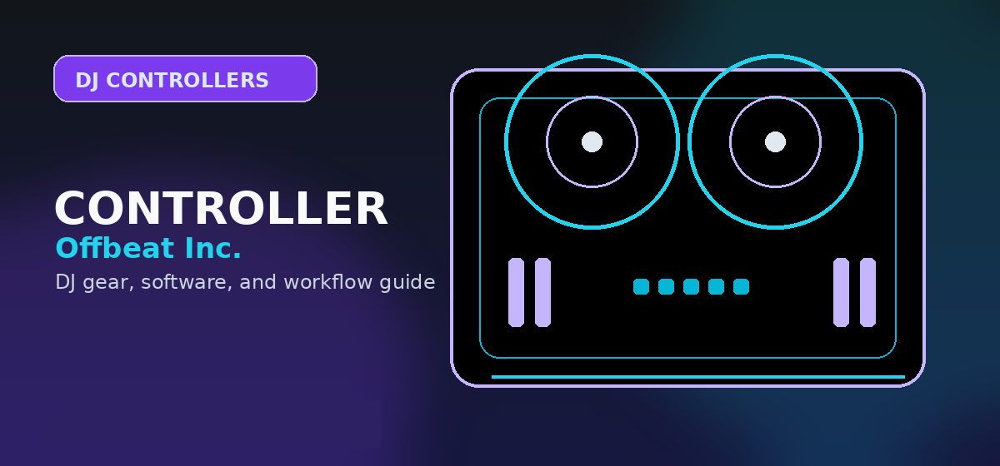

Best MIDI Controllers for Music Production 2026: From Budget Gems to Pro Powerhouses
Best MIDI controllers for music production 2026: Ableton Push, Akai MPC, Maschine, and budget picks tested. Find the right controller for your workflow.

Disclosure: This page uses affiliate links. We may earn a commission at no extra cost to you. Full disclosure →
In 2026, the bridge between musical intuition and digital execution is more seamless than ever. As Ableton Live, FL Studio, and Logic Pro continue to dominate the DAW landscape, the hardware we use to drive them has evolved from simple keyboards into fully integrated production hubs. Whether you are a live performer leveraging Ableton’s Session View, a beatmaker sculpting drums in FL Studio, or a studio engineer composing orchestral scores in Logic Pro, your choice of MIDI controller dictates your creative velocity. The right hardware doesn't just trigger notes; it removes the friction between your brain and the speakers. From standalone powerhouses that eliminate the need for a laptop to ultra-portable budget pads, this guide analyzes the top MIDI controllers of 2026 to help you find the perfect tactile interface for your specific workflow.
The Ecosystem Kings: Ableton Push 3 and Akai MPC
For producers who want total immersion, the Ableton Push 3 and Akai MPC series remain the gold standard. The Ableton Push 3 Standalone (~$1,999) is less of a controller and more of an instrument; its MPE-capable pads and deep integration with Live make it indispensable for improvisation and live performance. Conversely, the Akai MPC Live II (~$1,799) targets the "MPC workflow" purists. With a built-in sequencer and rugged chassis, it allows producers to sample, chop, and arrange entire tracks without ever touching a mouse. While the Push 3 wins on software fluidity, the MPC wins on standalone autonomy and tactile grit, making it the preferred choice for hip-hop and electronic artists who prefer a hardware-centric approach.
The Hybrid Powerhouse: Native Instruments Maschine+
The Native Instruments Maschine+ (~$1,200) occupies the critical middle ground between a dedicated beat-making machine and a DAW controller. By integrating a high-resolution screen and internal processing, it allows you to sketch ideas in the studio or on the couch, then seamlessly transition those ideas into your DAW. Its standout feature remains the industry-leading pad sensitivity, providing a rhythmic "bounce" that is difficult to replicate. While it is heavily tied to the NI ecosystem, the quality of the included libraries and the efficiency of the pattern-based sequencing make it a formidable tool for those who prioritize sound design and percussion-heavy compositions over traditional melodic arranging.
Budget-Friendly Essentials: Akai MPK Mini and Arturia MiniLab
You don’t need a thousand-dollar investment to produce professional music. The Akai MPK Mini MK4 (~$99) continues to be the most recommended starter kit in 2026. It packs a 25-key keyboard, 8 velocity-sensitive pads, and eight assignable knobs into a chassis that fits in a backpack. For those seeking a slightly more premium build and better software integration, the Arturia MiniLab 3 (~$109) is the primary competitor. Arturia’s strength lies in its bundled software, providing world-class synth emulations that make the hardware feel like a gateway to a professional studio. Both controllers are "class-compliant," meaning they work instantly with any DAW without complex driver installations.
Matching Your Controller to Your DAW
Selecting hardware without considering your software is a common mistake. If you primarily use Ableton Live, the Push 3 is the logical choice due to its native mapping of Session View and automation lanes. FL Studio users, who often rely on step-sequencing and piano rolls, find the Akai MPC or the MPK Mini's pads more intuitive for triggering drum hits. For Logic Pro users, who typically lean toward traditional composition and recording, a keyboard-centric controller like the Arturia MiniLab or a full-sized Novation keyboard is often more productive. In 2026, the trend is toward "deep integration"—choosing hardware that "speaks the same language" as your software to minimize time spent in menus and maximize time spent creating.
2026 MIDI Controller Comparison Table
| Controller | Best For | Est. Price | Key Pro | Key Con |
|---|---|---|---|---|
| Ableton Push 3 | Ableton Live Users | $1,999 | Unmatched DAW Integration | Very Expensive |
| Akai MPC Live II | Standalone Beatmaking | $1,799 | Total Laptop Independence | Steeper Learning Curve |
| NI Maschine+ | Hybrid Production | $1,200 | Best-in-Class Pad Feel | Ecosystem Lock-in |
| Arturia MiniLab 3 | Software Enthusiasts | $109 | Incredible Software Bundle | Limited Pad Count |
| Akai MPK Mini MK4 | Beginners / Travel | $99 | Ultra-Portable & Cheap | Small Synth Keys |
Quick Verdict
- The Professional Performer: Go with the Ableton Push 3. Its ability to handle complex automation and live clip launching is unrivaled.
- The Bedroom Beatmaker: The Akai MPC Live II is your best bet for a tactile, "hands-on" sampling experience.
- The Hybrid Producer: Choose the Maschine+ if you want a professional tool that works both as a standalone and a controller.
- The Budget Starter: Grab the Akai MPK Mini MK4 for a low-risk, high-reward entry into music production.
Investing in the right MIDI controller is about more than just specs; it's about finding the tool that complements your natural creative rhythm. Whether you are building a professional studio or a portable rig, the options in 2026 provide a path for every budget and skill level. Check out our curated affiliate links below to find the best current deals and bundles for these controllers.
Our pick: The Arturia KeyLab Essential 49 is the best MIDI controller for music production in 2026 -- bundled Arturia Analog Lab V, solid keybed weight, and a pads+knobs layout. For DJ production specifically, the Akai MPK Mini MK3 is a portable and affordable secondary controller. Check the Arturia KeyLab on Amazon →
Shop on Amazon
Find MIDI controllers for music production on Amazon — every size and budget.
Also on zZounds
Flexible financing · No credit check · 45-day price guarantee.
Getting the Most From Your Choice
Whichever option you choose from this page, these practices consistently help users maximise the value of music software and production tools:
- Start with the free tier or trial — every serious music tool offers a trial period; use it fully before committing to a paid plan
- Focus on depth over breadth — mastering one DAW or software tool completely is far more valuable than superficial knowledge of several
- Join the official community — most major tools have dedicated Discord servers, forums, or subreddits with active users and tutorial creators
- Update regularly — software tools in the music production space ship meaningful improvements quarterly; keep your tools current for bug fixes and new features
The music production and DJ software landscape continues to evolve rapidly. Bookmark this page to check for updated recommendations as new versions and competitive alternatives emerge throughout 2026.
MIDI Workflow and Control Mapping
The real power of MIDI controllers comes from intelligent control mapping. Most modern controllers ship with optimized mapping presets for popular DAWs (Ableton, FL Studio, Cubase), but learning to customize mapping in your DAW transforms a controller from tool into extension of your workflow. Assign frequently used functions to pads, knobs, and faders: drum patterns, instrument selection, reverb depth, master volume, and transport controls (play, stop, record). The learning curve is 2–3 hours, but it halves your production time. Start with the factory mapping, then spend one weekend customizing your personal setup.
Durability and Long-Term Reliability
MIDI controllers are workhorse hardware — they get knocked around in studios, on desks, and in backpacks. Premium controllers from Pioneer DDJ, Akai, and Native Instruments use reinforced knobs, faders with sealed internals, and metal chassis. Budget controllers are adequate but develop sticky encoders or unresponsive pads within 2–3 years of heavy use. Invest in a controller stand or platform to stabilize it during sessions. Most manufacturers offer 2-year warranties and spare parts availability. If you're producing 20+ hours weekly, a premium controller pays for itself in workflow efficiency within 6 months.
Scaling Your Setup: From Solo to Collaboration
Your first controller is usually solo-focused. As you progress, consider scaling: two controllers (master/slave setup for collaboration), modular approach (separate key controller + drum pads), or networked controllers (USB daisy-chaining). Most modern controllers support multiple simultaneous connections via USB hub or Bluetooth, opening collab workflows with producers in other cities. Plan for modularity from the start — choose a controller brand with ecosystem support rather than a closed system.
Full Comparison Table
Use this reference table to compare all the options covered in this guide at a glance:
| Consideration | Entry-Level Options | Mid-Range Options | Professional Options |
|---|---|---|---|
| Typical price range | Under $150 | $150 — $400 | $400+ |
| Best for | Absolute beginners; casual use | Serious hobbyists; semi-pro | Working professionals; touring DJs |
| Build quality | Plastic chassis, standard jogs | Metal components, improved jogs | Club-grade construction |
| Software included | Lite versions only | Full versions included | Full + pro features activated |
| Resale value | Low | Moderate | High (holds value well) |
For most beginners reading this guide, the mid-range tier represents the best value. Entry-level gear is often outgrown within 6 months, while professional gear has capabilities that may go unused for years. Put the savings toward music, lessons, or a better audio interface instead.
What to Buy First vs What to Wait On
- Buy first: Controller + headphones — these are the core tools where quality directly affects the learning experience
- Can wait: Mixer upgrades, USB drives, custom cartridges — these matter more once you have core skills developed
- Rent before buying: PA speakers for mobile gigs — rental makes more sense than purchase until you have 10+ events booked
- Skip entirely (for most): Standalone media players (CDJs) — software-based workflow is professional-grade and significantly cheaper
Frequently Asked Questions
What should I check before buying this DJ controller?
Confirm software compatibility, audio outputs, headphone cueing, driver support, and whether the controller fits your real practice or gig setup.
Is this controller category good for beginners?
It can be, but beginners should prioritize reliable software support, simple routing, and controls that teach transferable DJ habits before paying for advanced performance features.
Should I buy new or used?
Buy used only when the seller can confirm working jog wheels, faders, outputs, USB connection, and included software/license status. Otherwise, new gear is safer for first-time buyers.